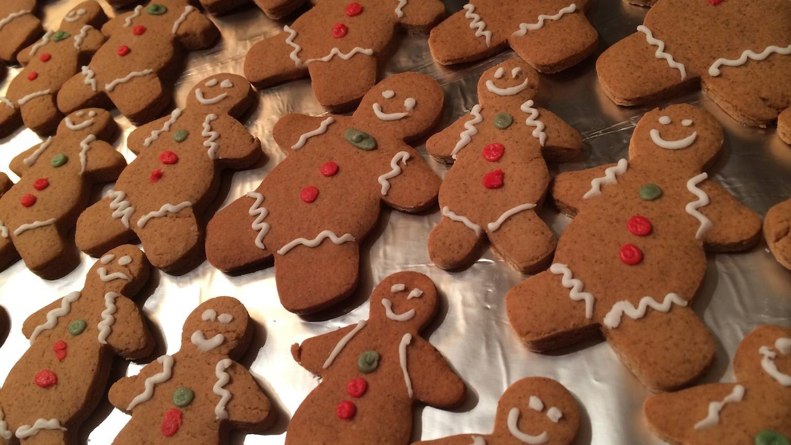

Kerstideeën
Home
Decoratie
Kerstboom
Binnenshuis
Buitenshuis
Recepten
Voorgerechten
Hoofdgerechten
Nagerechten
Over ons
Home
/ recepten /
nagerechten
/
peperkoekmannetjes

Peperkoekmannetjes (gingerbreadmen)
Benodigheden
200 g zelfrijzend bakmeel
75 g boter
75 g donkerbruine basterdsuiker
1 tl kaneel
2 tl gemberpoeder
3 volle el golden syrup
decoratiestiften
Bereiding
Verwarm de oven voor op 185°C.
Meng het zelfrijzend bakmeel met de kaneel en gemberpoeder. Roer todat er een egaal geheel onstaat.
Smelt de boter, donker basterdsuiker en de syurp op een laag vuur.
Voeg dit suikermengsel aan het meel toe. Mix met deeghaken tot een egaal geheel.
Pak het deeg in huisfolie en leg het minimaal een uur in de koelkast.
Rol het deeg uit tot ongeveer een 1 cm dik. Steek vervolgens allemaal even grote koekjes met een mannetjes koekvorm
Doe de koekjes circa 10 minuten in de oven.